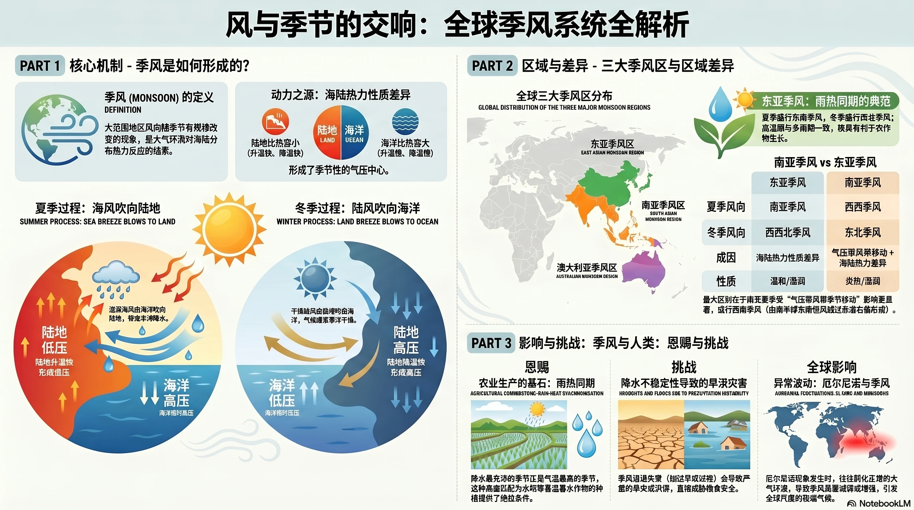
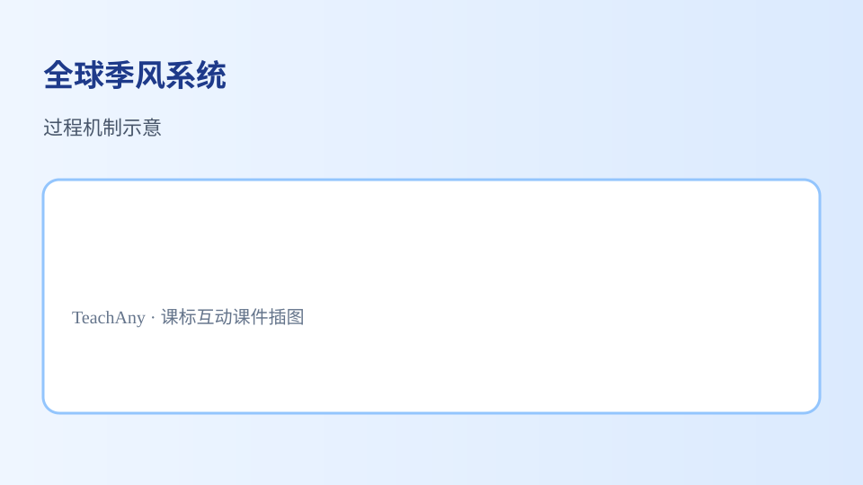

🌍 全球季风系统
为什么夏天吹东南风、冬天吹西北风？——从海陆热力差异到全球大气环流
4核心模块
9诊断题
2交互实验
≈40分钟

为什么夏天吹东南风、冬天吹西北风？——从海陆热力差异到全球大气环流
中国每年夏天都有梅雨季节，冬天北方干燥寒冷，南方温暖湿润——这些都是季风的"杰作"。
季风是怎么形成的？为什么风向会随季节反转？东亚季风和南亚季风有什么不同？
理解海陆热力差异如何驱动季风，掌握东亚季风和南亚季风的成因及对中国气候的影响。
检查你的前序知识：比热容、风的形成、中国风向规律。
[And] 你知道夏天中国东南沿海常下雨，冬天北方干冷。
[But] 这种"冬夏完全不同的天气模式"只在地球上特定区域发生。
[Therefore] 这些区域叫"季风气候区"——风向和降水随季节剧烈变化。
| 术语 | 含义 |
|---|---|
| 季风 Monsoon | 大范围内盛行风向随季节显著变化的现象（通常冬夏方向相反） |
| 季风气候 | 由季风主导：雨热同期、旱雨分明 |
关键词：风向随季节变化 + 大范围 + 显著
↑ 可拖动/缩放地图 · 点击季风区查看详情 · 切换季节观察风向变化
中国东部、朝鲜半岛、日本
世界最大季风区
印度半岛、中南半岛、菲律宾
季风最盛地区
澳大利亚北部
季节与北半球相反
既然风从高压吹向低压，为什么高压低压的位置会随季节互换？
陆地快速升温 → 低压中心（亚洲低压）
海洋保持较低温度 → 高压中心（太平洋副高）
空气从海洋高压→陆地低压 → 夏季风：温暖湿润
暖湿气流遇地形抬升 → 凝结成雨 → 雨季
| 夏季 | 冬季 | |
|---|---|---|
| 风向 | 东南风 SE | 西北风 NW |
| 性质 | 温暖湿润 | 寒冷干燥 |
| 影响 | 高温多雨（雨季） | 低温少雨（旱季） |
| 成因 | 海陆热力差异（单因） | |
成因相对简单——主要是海陆热力差异。太平洋最大大洋+欧亚大陆=温差极致。
| 夏季 | 冬季 | |
|---|---|---|
| 风向 | 西南风 SW | 东北风 NE |
| 特色 | 雨季占全年降水 80%+ | |
下面 5 个选项中，有 3 个是南亚夏季西南风的成因。把正确的拖入下方确认框：
👇 拖到这里（需要 3 个）
| 北半球夏季 | 北半球冬季 | |
|---|---|---|
| 澳洲季节 | 冬季（干季） | 夏季（湿季） |
| 风向 | 东南风 | 西北风 |
记忆：站在赤道——北半球过夏时南半球在过冬。中国在吹 SE 湿季风时，澳洲在吹干冬季风。
| 维度 | 东亚 | 南亚 |
|---|---|---|
| 夏风 | SE | SW |
| 冬风 | NW | NE |
| 成因 | 海陆差（单因） | 海陆差+气压带移动+地转偏向（多因叠加） |
| 强度 | 强 | 全球最强 |
风险：夏季风异常→干旱或洪涝。每年盼季风正常来。
印度气象局每年发布季风预报。"Monsoon economy"。
如果全球持续变暖，亚洲季风系统可能发生什么变化？请从"海陆温差""极端天气""农业生产"三个角度写出你的预测和理由，并说明这对中国东部区域经济可能带来的影响。
提示：陆地升温比海洋快，海陆温差可能如何变化？季风强度和降水模式又会怎样连锁反应？
检验学习效果，答完生成结课报告。
| 知识点 | 核心结论 | 易错提醒 |
|---|---|---|
| 定义 | 大范围盛行风向随季节显著变化 | "显著"≠ 微弱 |
| 根本成因 | 海陆热力性质差异 | 非地形/公转本身 |
| 东亚 | 夏 SE 冬 NW ｜ 单因 | 世界最大主体 |
| 南亚 | 夏 SW 冬 NE ｜ 三重叠加 | 全球最强 |
| 澳大利亚 | 季节与北半球相反 | 北夏=澳冬 |
| 季风 vs 信风 | 季风=季节反转；信风=常年稳定 | 可重叠 |
季风形成原因误解：季风主要由海陆热力性质差异导致气压差异形成，赤道低压带移动只是辅助因素。风向混淆：北半球夏季风从海洋吹向陆地（东亚 SE、南亚 SW），冬季风从陆地吹向海洋（东亚 NW、南亚 NE）。记忆口诀："夏陆热低海高吹，冬陆冷高海低来；东亚东南西北风，南亚西南东北吹。"

